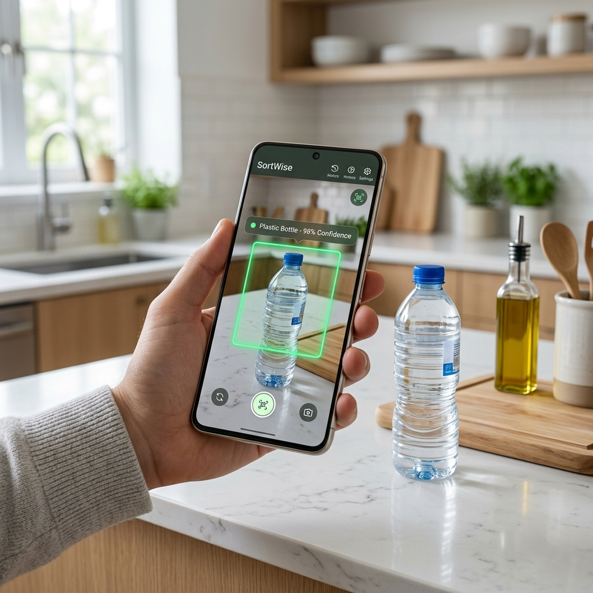

Smart Waste Sorting Assistant for a Sustainable Future
Recycling is essential, but it's often confusing. Different municipalities have different rules, and "wish-cycling" (guessing) leads to contamination in recycling bins.
People often struggle to identify the correct category for complex household waste.
Incorrect sorting increases the cost and decreases the efficiency of recycling plants.
SortSmartSE brings AI to your kitchen. By combining on-device machine learning with local municipal rules, we make recycling effortless and accurate.

Leveraging Google ML Kit for high-performance object detection and image labeling.
Advanced logic filters out background noise like furniture or people to focus purely on waste items.
Dual-pass analysis (Object Detection + Labeling) ensures high accuracy even in poor lighting.
Real-time visual markers show exactly what the AI sees and its confidence level.
All processing happens locally on your device. No images are ever sent to the cloud.
A static guide isn't enough. SortSmartSE understands the specific rules of local waste management authorities.
Directly incorporates sorting rules for Malmö and Lund regions.
Detailed instructions for everything from pizza boxes to lithium batteries.
Environmental action requires community-wide participation. We've removed the language barrier.
Full support for offline mode ensures the app works in basements and recycling centers where signal is weak.
Built with the latest Android technologies for performance and maintainability.
By empowering individuals to sort correctly, we reduce landfill waste and maximize the value of our recycled resources.
Thank You!